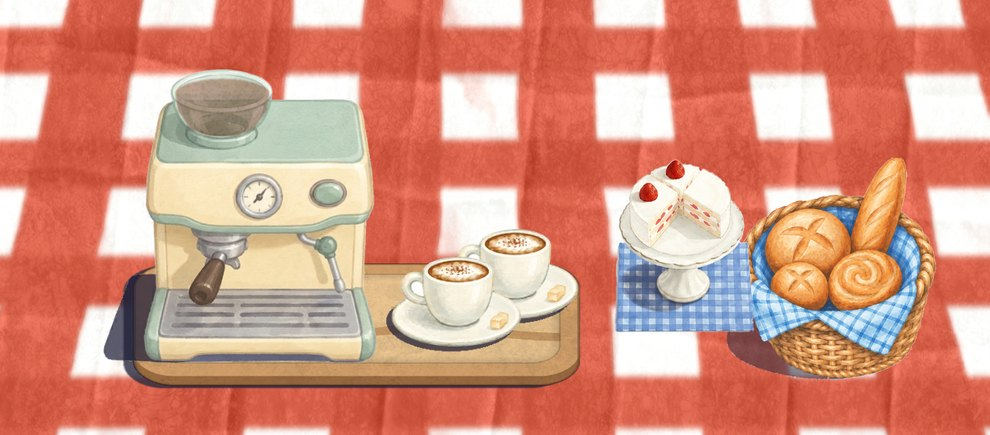
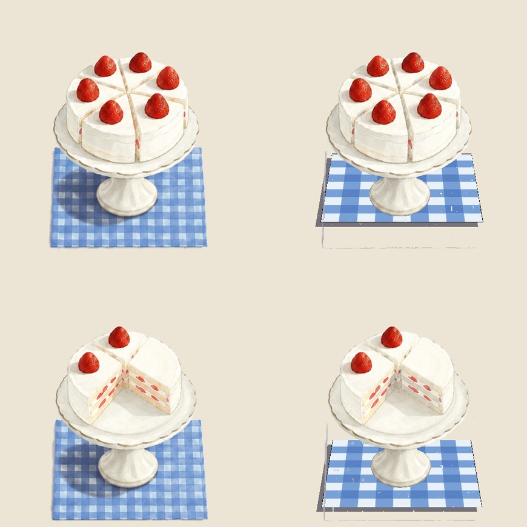

Food Truck Cafe
Your report for 9 November. Version 26.10.26 has been live on the App Store since 27 October.


1Next
You
Pick the two gameplay improvements for the next release (MVP, step 1).
Tick your choices under Q1 to Q6, under Current, and in the Backlog.
Was the 31 October player who reached day 16 in a day you? If yes, that player leaves the Analysis.
Sign in to App Store Connect in Chrome, then say numbers.
Unity Ads: add a payout profile in the Unity dashboard.
Bugs folder: IMG_9758 and IMG_9759 look fixed in 26.10.26; delete them if you agree. The PDF in there is not a game bug.
Me
Main merged and pushed, 9 November: 55 commits, main at 0a73a05. The store build and the four Current changes are all on main now.
Nothing in progress. Round 1 starts when you pick the two improvements: I build them and upload a TestFlight build.
ChatGPT: the cake first, on your word chatgpt cake.
2Q&A
Q1 · Why update the cake sprite? Show me drafts of the change 9 November
The cake is already at the 40-degree camera (ChatGPT, 13 October). Three reasons remain, two of them yours from that day:
1. The napkin stands up like a diamond instead of lying flat on the table. 2. The cut slice shows a pink strawberry face; you asked for plain cream sponge with a thin jam line. 3. The new machine and cups are in the cute style: soft pastel, simple shapes, thick soft edges. The cake is detailed watercolour, so the table now mixes two styles.
If none of the three bothers you in play, the cake stays. Nothing is cut into the game without your tick.


Draft 2 would be ChatGPT's: the same cake repainted in the machine's cute style, flat napkin, cream cut face, seven slice frames as now. One picture of the three a day.
Q2 · Is there a way to exclude my test play? 9 November
Yes, already built in. Install the game from TestFlight and play that copy: a TestFlight build sends its analytics to the development environment and shows test ads, so nothing you do counts. Build 21 on TestFlight is the same game as the store.
The App Store copy always counts. If you play it anyway, tell me the day and the hour; I find that player and leave the id out of every read from then on.
Q3 · What is on the list for ChatGPT to improve? 9 November
Table items at the 40-degree camera in the coffee machine's cute style, in this order: cake (flat napkin, no pink cut face), choux board, juice jug and glass (you said the juice stays on 21 October, so only if you want the set to match), candy jar, the two flower pots.
Then the nine menu stickers on your oven-note paper, and the beach: the right palm's trunk, the stripe cloth texture, the kitchen palm's crown.
Done already: coffee machine and cups, apple and bread baskets, apple counts, ice cream station fills, the candies icon (Gemini).
Three pictures a day on the free plan. Nothing is cut into the game until you pick.
Q4 · The polish release: which groups? 31 October
A. Feel. A serve sound per food, the wrong-tap shake on every food, coins fly to the hen board, a Perfect! stamp, the last daisy pulses, stars pop on the finish card, a rating prompt after the first three-star day.
B. Play. Let's go straight into day 1, a table clock, an Open! and Closed bell, analytics for the map and Ready taps. Day 1 pre-arranged is done.
C. Look. The 40-degree set in the machine's style (cake, choux, juice, candy jar, pots), menu stickers on your oven-note paper, the beach palm trunk, the cloth texture, the kitchen palm crown.
Not in: stars as a currency, new foods, new chapters.
Q5 · Fast serve and the streak reward 31 October
Fast serve = the game's perfect rule: the whole order done with half the patience left. Streak = fast serves in a row, broken by a slow order or a walk-off. Nothing is built until you pick the reward.
Q6 · More ideas for the polish release 31 October
3Current
Done since 31 October, on main, not in a build


4MVP
Your plan of 9 November: a couple of gameplay improvements, then at least five rounds of your own play test, feedback after each. Feel and play only; no features, no new chapters.
- You pick two gameplay improvements. Tick them in Q4 (groups), Q5 (streak) and Q6 (small ideas). My pick if you want one: Let's go straight into day 1, and the fast-serve streak with a Perfect! stamp.
- I build the two on main, play them in the editor, upload TestFlight build 22.
- Round 1 to 5. You play the TestFlight build on your phone (it stays out of the numbers and the ads) and tell me what felt wrong or good. Each round: I fix, upload the next build, and log the round here under Current.
- Store submission on your yes after round 5, with your texts. The privacy label gets the analytics entry.
5Backlog
Do in the polish release. Unticked items go when you say clean up.
6Analysis, 2 to 8 November
Read 9 November, 10:00 PST. Days are UTC. Players and ads from Unity. App Store Connect is signed out, so Apple's downloads, impressions and page views wait for your sign-in.
| Day | New players | Finished the tutorial | Days finished | Ad requests | Ads shown | Ad revenue |
|---|---|---|---|---|---|---|
| Sun 2 | 0 | 0 | 0 | 0 | 0 | $0 |
| Mon 3 | 2 | 1 | 0 | 6 | 1 | $0.02 |
| Tue 4 | 0 | 0 | 0 | 0 | 0 | $0 |
| Wed 5 | 0 | 0 | 0 | 0 | 0 | $0 |
| Thu 6 | 1 | 0 | 0 | 1 | 0 | $0 |
| Fri 7 | 3 | 0 | 0 | 7 | 2 | $0.02 |
| Sat 8 | 0 | 0 | 0 | 0 | 0 | $0 |
| Week | 6 | 1 | 0 | 14 | 3 | $0.05 |
| Week before, 26 Oct to 1 Nov | 9 | 6 | 21 | 88 | 23 | $0.08 |